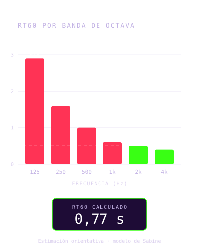
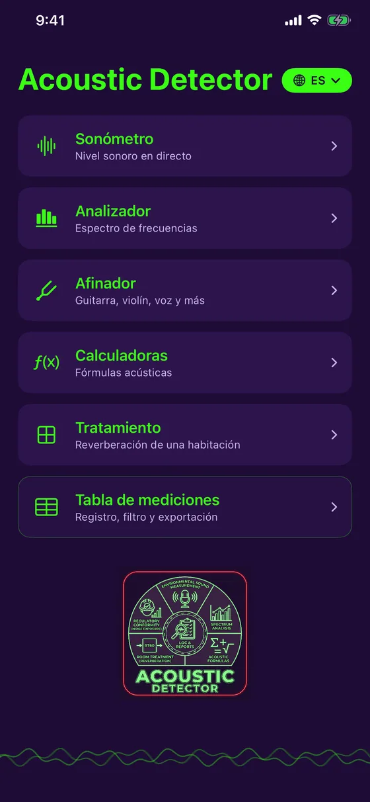
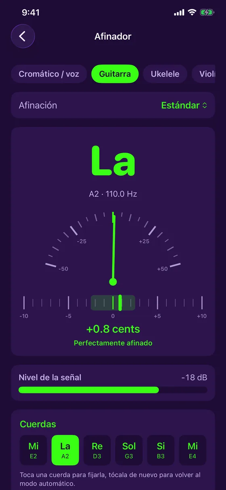
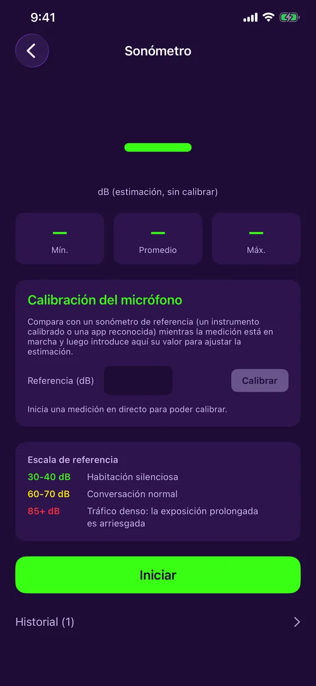
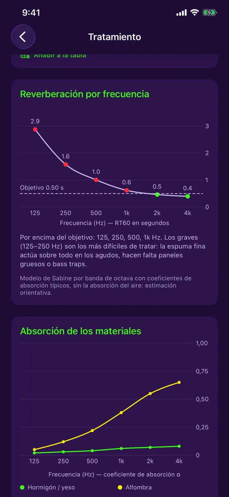
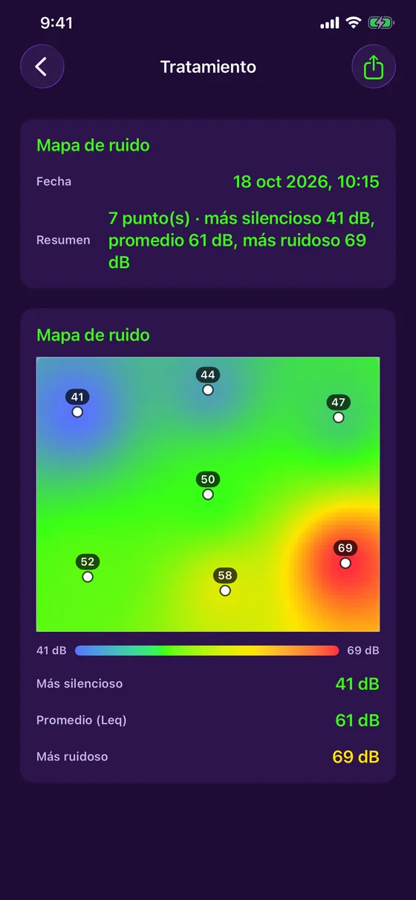
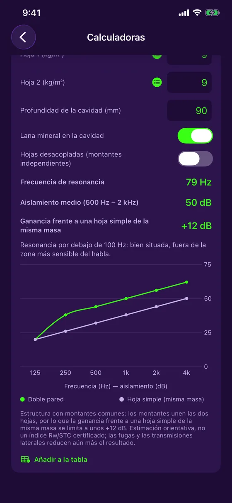
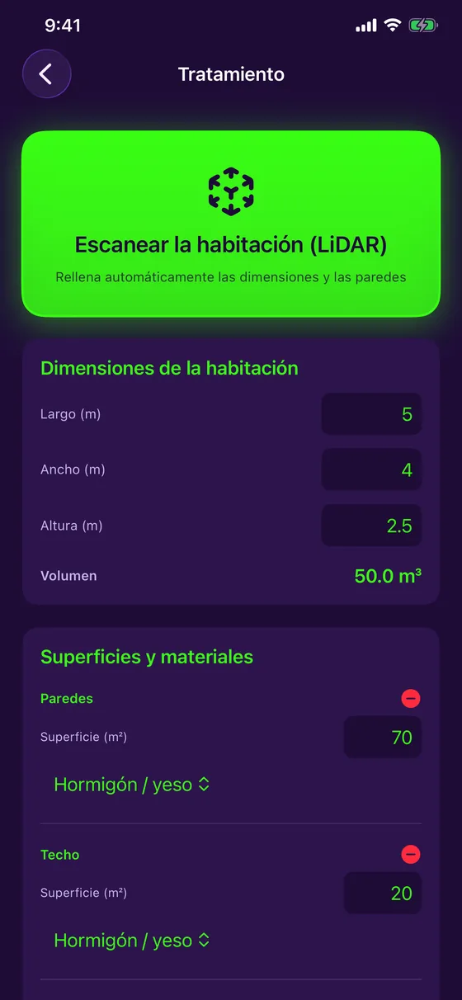
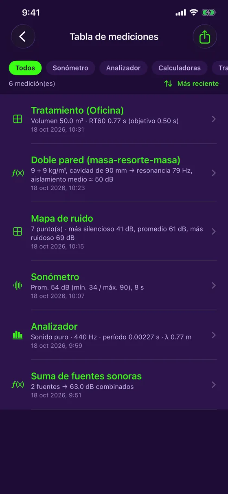

Medición sonora y tratamiento acústico
Escucha. Analiza. Corrige.
Acoustic Detector convierte tu iPhone en una herramienta de acústica. Mide el ruido, analiza el espectro, escanea una sala con LiDAR y descubre dónde resuena y cuánta espuma acústica añadir. Gratis, 100 % sin conexión, en 7 idiomas.

Versión 1.4.1: un afinador gratuito, más estable y preciso
Acoustic Detector incluye un afinador gratuito para guitarra, ukelele, violín y más, y habla español, francés, inglés, alemán, portugués, italiano y japonés.
- Afinador gratuito: guitarra (5 afinaciones), ukelele (con sol grave y barítono), violín, viola, violonchelo, mandolina, banjo y modo cromático para la voz
- Versión 1.4.1: lectura más estable que ignora las medidas erráticas, aguja más precisa, indicador de nivel de la señal
- Notas en Do Re Mi o en C D E según el idioma, y una vibración cuando está afinado
- 7 idiomas, a elegir desde el menú principal
- RT60 por banda de octava, de 125 Hz a 4 kHz, frente a tu objetivo
- Mapa de ruido: mide en varios puntos y obtén un mapa de calor
- Doble tabique: frecuencia de resonancia y aislamiento por frecuencia
- La app es gratuita: sonómetro, analizador, afinador, tabla de mediciones y exportación a PDF incluidos; Tratamiento y Calculadoras con una compra única
Versión 1.4.1 disponible en el App Store.
Una herramienta orientativa, presentada con honestidad. El micrófono del iPhone no es un instrumento certificado: los valores mostrados son estimaciones, identificadas claramente como tales, con una calibración manual opcional para afinar la precisión. Acoustic Detector no sustituye a un instrumento calibrado para el cumplimiento normativo oficial.
Qué hace Acoustic Detector
Un solo dispositivo para medir y corregir
Sonómetro en directo
Nivel en dB en tiempo real, con mínimo, media y máximo, calibración del micrófono e historial en colores.
Analizador de espectro
Análisis de frecuencias en directo, con detección de tono puro: frecuencia, periodo y longitud de onda.
Tratamiento de una sala
El tiempo de reverberación (RT60) frente al objetivo de tu uso, y la cantidad de espuma acústica que añadir.
Escáner LiDAR
En un iPhone Pro, barre la sala: las dimensiones y la superficie de cada pared se rellenan solas.
Mapa de ruido
Mide el nivel en varios puntos y localiza las zonas tranquilas y ruidosas en un mapa de calor.
Afinador
Guitarra, ukelele, violín, viola, violonchelo, mandolina, banjo, o cualquier nota y tu voz: aguja y cents en directo.
Calculadoras
Suma de fuentes sonoras, presión acústica, frecuencia y longitud de onda, y cálculo de doble tabique.
Vista previa
Sobrio, preciso, listo para el trabajo de campo








Para quién
De la obra al estudio
Contratistas y técnicos
Mide el ruido de un lugar, comprueba un tabique, estima el tratamiento de una sala antes de presupuestar.
Estudios, músicos, audio
Calcula la reverberación de una sala, localiza los graves problemáticos, estima la espuma que añadir y afina tus instrumentos.
Casa y oficina
Cine en casa, oficina en casa, sala de reuniones: descubre dónde resuena y qué hacer al respecto.
Precio
Gratis, con una compra única opcional
Gratis
- Sonómetro en directo y calibración
- Analizador de espectro
- Afinador (guitarra, violín, voz y más)
- Tabla de mediciones
- Exportación a PDF con gráficos
Completo
- Todo lo gratuito
- Tratamiento: RT60, absorción, escáner LiDAR, mapa de ruido
- Calculadoras: fuentes, presión, ondas, doble tabique
- Sin suscripción
El precio lo muestra el App Store según tu país. Si compraste la app antes de que fuera gratuita, todo sigue desbloqueado automáticamente.
¿Listo para escuchar tu sala?
Acoustic Detector está disponible en el App Store, para iPhone. Gratis, con una compra única opcional.
Descargar en el App Store